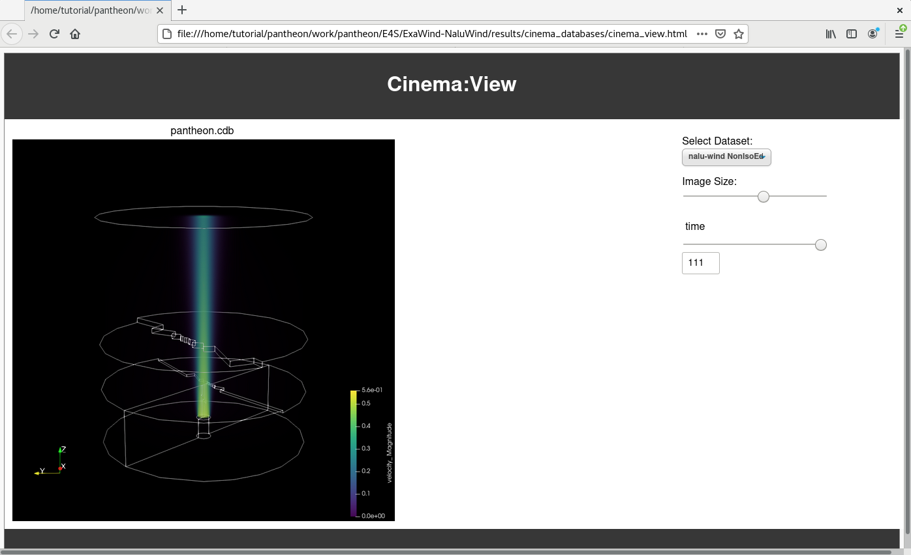
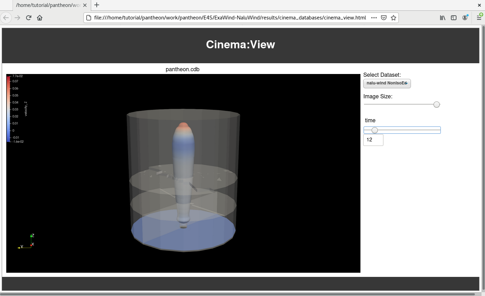

10. Changing the visualization
The visualization in this example is done in a post-processing step by
a ParaView python script. There are two examples of visualizations in this repository,
each of which outputs a different type of image into the Cinema database. Executing
a different script therefore creates a different visualization.
To change the visualization, run a different script in the `postprocess/post_submit.sh` script
by choosing which script is uncommented. These images show the different visualizations:
You can also edit the
postprocessing/post_submit.sh script by commenting
|  |
 |
| Volume visualization |
Isosurface visualization |
You can also edit the
postprocessing/post_submit.sh script by commenting
out one of the lines in the script that defines the
VISUALIZATION variable:
# uncomment one of the following lines to control the type of
# visualization created by this script
VISUALIZATION=contours_image_cdb_extract.py
# VISUALIZATION=volume_rendering_cdb_extract.py